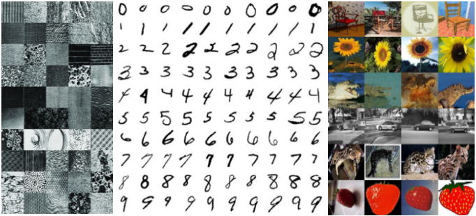
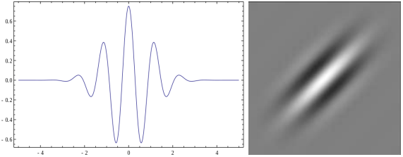
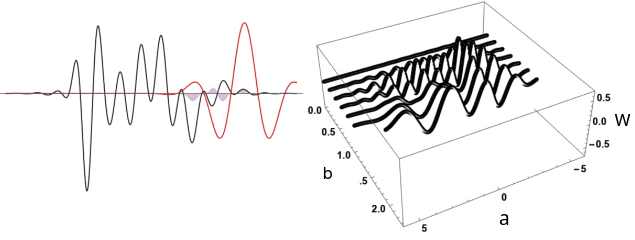
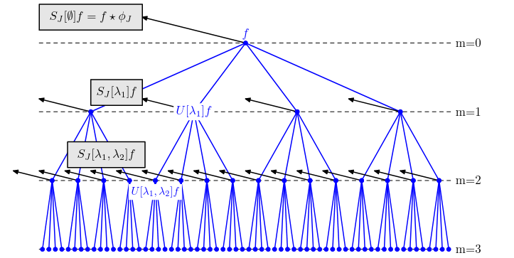
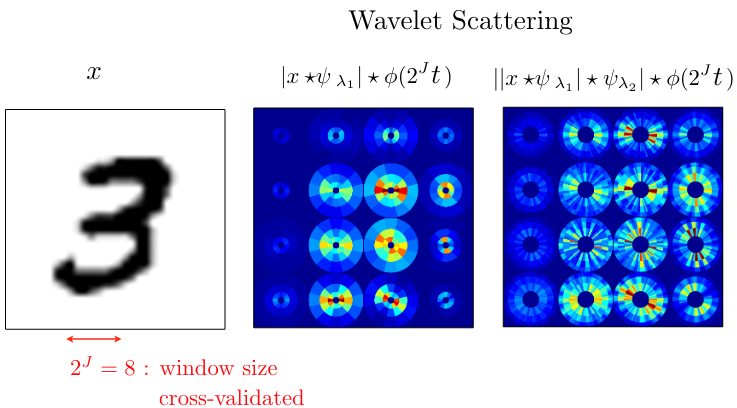
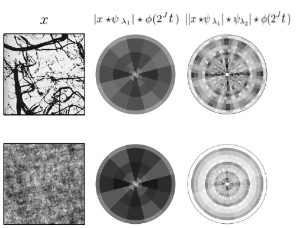
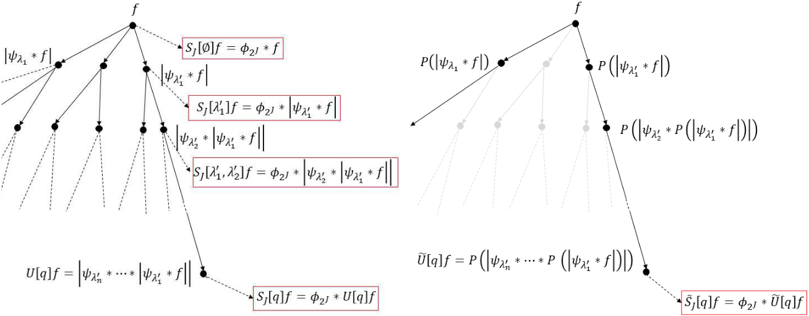
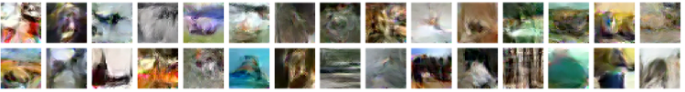
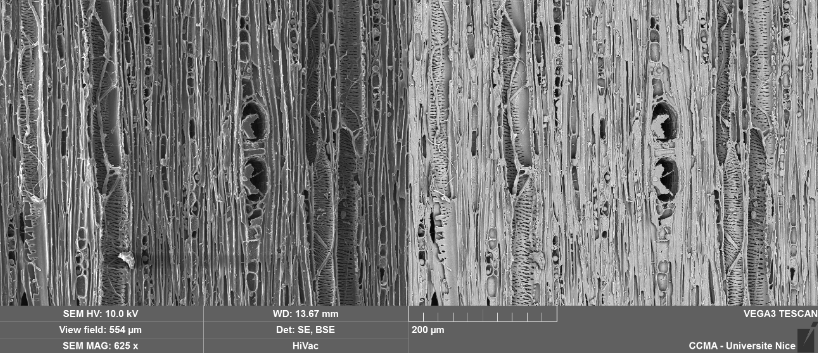

class: center, middle, title-slide count: false ## <b>Scattering Networks</b><br/><sub>Pattern recognition with wavelets</sub> ### Presented by Q. Le Roux (github@qlero) <br/> .less-line-height[ .grey[Université Côte d'Azur] ] --- class: center, middle, title-slide # 🌐 .font80[Context] --- # Image Classification .font80[ <center>One should find a proper feature mappings for high-dimensional tasks. Using whole images is inefficient.</center> <center>Feature maps should capture a proper notion of similarity.</center> ] <br> .font50[<center></center> <center>Elements from the Brodatz, MNIST, Caltech101 datasets</center>] --- # Invariance and Stability .font70[ Proper signal representation (or feature mapping) should preserve some idea of distance (1), and display invariance to translations (2) and stability to deformations (3). \begin{align} \forall x\in L^2(\mathbb{R}^n)&,\\\\ \forall x'\in L^2(\mathbb{R}^n)&,\quad d(x, x')=\lVert\Phi(x)-\Phi(x')\rVert\tag{1}\\\\ \forall\gamma\in G&,\quad\Phi(\gamma(x))=\Phi(x)\tag{2}\\\\ \forall\gamma\in Diff(\mathbb{R}^n)&,\quad\lVert \Phi(\gamma(x))-\Phi(x)\rVert\le C\lVert x\rVert\lVert\gamma\rVert\tag{3} \end{align} ] <br> .font50[ Where \\(\Phi(x)\\) is a \\(n'\\)-dim. feature map of a \\(n\\)-dim. signal \\(x\\) in a space equipped with a \\(L^2\\) norm (with \\(n,n'\in\mathbb{N},\,n'\le n\\)), \\(d\\) the Euclidian distance, \\(G\\) a group of transformations in \\(\mathbb{R}^n\\), \\(Diff(\mathbb{R}^2)\\) a group of diffeomorphisms in \\(\mathbb{R}^2\\), and \\(C\\) a Lipschitz constant (smaller is better). ] --- # The 2010-Onward Way .font80[ <center>Easy answer, Just throw a CNN at it?</center> <center><img src="images/cnn_mnist.jpg"></center> <br> <center>But, are we confident enough about what CNNs do?</center> ] <br> .font40[ **Source**: Ward, J., et al.: `Efficient mapping of the training of Convolutional Neural Networks to a CUDA-based cluster`, PARsE, Eindhoven UoT. ] --- # A Skeptic Team <br> .font80[ Between 2010 and 2013, Stéphane Mallat (ENS, Chair of Data Science, Collège de France) and his team wished to address the CNNs' rise and provide an understandable, if not mathematically equivalent approach: ] <br> <center><b>Scattering Networks</b></center> --- class: center, middle, title-slide # 🧮 .font80[The Scattering Representation] --- # The Wavelet .font70[A <b>wavelet</b> is a small wave-like function \\(\psi\\) that can be parametrized by a scale \\(a\\) and shift \\(b\\) s.t.: \begin{align} \psi_{a,b}(t)=\frac{1}{\sqrt{a}}\psi(\frac{t-b}{a});\quad \int\psi(t)dt=0 \end{align} ] .font50[ <center></center> <center><i>Example 1D and 2D Morlet (Gaussian-based) Wavelets (src. Wikipedia, Mathlab)</i></center> <br> **Source**: Wikipedia page on [Wavelets](https://en.wikipedia.org/wiki/Wavelet), Mathlab page on [Morlet Wavelet Kernel](https://en.wikipedia.org/wiki/Wavelet) ] --- # The Wavelet Transform .font60[ The <b>Wavelet Transform</b> decomposes a signal at given frequencies and resolutions by averaging the signal's convolution with a wavelet function. Such an average is a <b>wavelet coefficient</b> defined by: \begin{align} W_\psi x(a, b)=\frac{1}{\sqrt{\lvert a\rvert}}\int x(t)\star\psi(\frac{t-b}{a})dt \end{align} ] .font50[ <center></center> <center><i>Wavelet coefficients over an example signal x</i></center> <br> **Source**: [The Wavelet Transform](https://www.youtube.com/watch?v=kuuUaqAjeoA), Andrew Nicoll, Youtube 2020 ] --- # As a note forward .font70[ <br> 1. We drop the parameter \\(b\\). We are only interested in the scale \\(a\\) 2. We call the operation \\(x\star\psi_a\\) the <b>wavelet operator</b> 2. We are interested in the wavelet operator where: \begin{align} \forall r\in G&,\,\\\\ \forall j \lt J\in\mathbb{N},\lambda&=2^jr\\\\ \psi_\lambda(t)&=2^{-dj}\psi(\lambda^{-1}t)\\\\ \end{align} ] <br> .font50[ Where \\(r\\) is a rotation in the rotation group \\(G\\) of \\(\mathbb{R}^d\\) and \\(\lambda\in\Lambda_J\\) is the set of orientations that rotate and dilate the wavelet \\(\psi\\) at a given scale \\(J\\). ] --- # The Scattering Propagator .font60[ 1. Wavelet coefficients are not translation invariant, 2. but adding a non-linear modulus operator to the wavelet operator yields a translation invariant <b>wavelet modulus operator</b>: $$\lvert x\star\psi_\lambda\rvert$$ 3. Averaging the wavelet modulus operator incurs information loss that can be retrieved by composing the operator again at an orientation \\(\lambda'\\) 4. Given a \\(m\\)-depth composition of wavelet modulus operators along <b>paths</b> \\(p=\\{\lambda\_1,\lambda\_2,\ldots,\lambda\_m\\}\\), we yield the <b>Scattering Propagator</b>: \begin{align} \forall i\in\\{1,\ldots,m\\},\forall\lambda\_i\in\Lambda\_J,\,\\\\U[p]x&=\lvert\,\lvert\lvert x\star\psi\_{\lambda\_1}\rvert\star\,\psi\_{\lambda\_2}\rvert\ldots\lvert\star\,\psi\_{\lambda\_m}\rvert \end{align} 5. Averaging each compositional step of \\(U[p]x\\) yields an invariant coefficient. ] --- # The Scattering Transform .font60[ 1. We note, given \\(p=\\{\lambda\_1,\lambda\_2,\ldots,\lambda\_m\\},\,\,U[p]x=U[\lambda\_1]U[\lambda\_2]\ldots U[\lambda\_m]x\\) 2. We introduce another wavelet function \\(\phi\_{2^J}(t)=\phi(2^{-J}t)\\) 3. The <b>Scattering Transform</b> computes, *for all \\(i\\)-combination of orientations \\(\lambda\in\Lambda\_J,\,\forall i\in\\{1,\ldots,m\\}\\) forming a path \\(p\_i\\)*, the <b>windowed scattering transform</b> \\(S\_J[p\_i]x\\) s.t.: \begin{align} S\_J[p\_i]x(u)&=U[p\_i]x\star\phi\_{2^J}(u)\\\\ &=\int U[p\_i]x(v)\phi\_{2^J}(u-v)dv \end{align} 4. Given a set of positions \\(t^*\\), we obtain the piecewise constant functions called <b>scattering coefficients</b>: \begin{align} S\_J[p\_i]x(t) \end{align} ] .font50[ \\(*\\) In the case of images, a position can be taken as a \\(2^J\\)-sided square window. ] --- # .font70[Scattering Transform as Convolutional Network] .font60[A Scattering Transform is a type of fixed CNN. As a <b>Scattering Network</b> it outputs an array of scattering coefficients which are: <center>***translation invariant and deformation-stable feature maps***</center> <br> <center></center> ] .font50[**Source**: Bruna, J.: `Scattering Representations for Recognition`, Ecole Polytechnique, 2013] --- # .font80[Visualizing the Scattering Network] <center></center> .font50[ <center><i>Scattering coefficients of an example MNIST digit "3"</i></center> ] <br> .font50[**Source**: Mallat, S.: `Scattering Invariant Deep Networks for Classification`, UCLA, 2012] --- # .font80[Visualizing the Scattering Network] .font50[ <center></center> <center><i>Comparison of Brodatz texture scattering coefficients</i></center> ] <br> .font50[ **Source**: Mallat, S.: `Invariant Scattering Convolution Networks`, Ecole Polytechnique, 2012 ] --- # Scattering Networks' Advantages .font60[ 1. Guarantees translation invariance 2. Displays deformation robustness 3. Fixed architecture with few parameters (2 for a 2-dimensional setup: number of scales \\(J\\) and number of orientations \\(\lambda\\)) 4. Explainable: 1. The Scattering Network is a CNN with wavelets as filters. 2. The wavelets recursively shave the lower frequencies of the signals to construct the scattering coefficients 3. The scattering coefficients capture the energy/moments of a signal 5. The Scattering Network can be computed efficiently: 1. Efficient at depth of 2 (i.e. \\(m=2\\)) 2. Reduced Scattering Network algorithm (\\(\mathcal{O}(n\log n)\\)) ] --- class: center, middle, title-slide # 🧱 Empirical Results --- # Beats CNN in some tasks .font60[ Scattering Networks beat CNN in 2012 on datasets such as: MNIST, Brodatz, Caltech 101, Caltech 256, KTH-10. Scattering Networks shine in downsampled cases. ] .font50[ <center><i>% of misclassified MNIST images, given a varying training set size</i></center> ] .font60[ | Models/training size | 300 | 1000 | 2000 | 5000 | 10,000 | 20,000 | 40,000 | 60,000 | | :---: | :---: | :---: | :---: | :---: | :---: | :---: | :---: | :---: | | PCA | 14,5 | 7.2 | 5.8 | 4.9 | 4.55 | 4.25 | 4.1 | 4.3 | | SVM | 15.4 | 8.2 | 6.5 | 4 | 3.11 | 2.2 | 1.7 | 1.4 | | SCN of order \\(m=1\\) + PCA | 5.7 | 2.35 | 1.7 | 1.6 | 1.5 | 1.4 | 1.36 | 1.34 | | SCN of order \\(m=1\\) + SVM | 8 | 4 | 2.6 | 1.6 | 1.23 | 0.96 | 0.75 | 0.62 | | SCN of order \\(m=2\\) + PCA | **4.7** | **2.3** | **1.3** | **1.03** | 0.88 | 0.79 | 0.74 | 0.7 | | SCN of order \\(m=2\\) + SVM | 5.6 | 2.6 | 1.8 | 1.4 | 1 | **0.58** | **0.53** | **0.43** | | CNN | 7.18 | 3.21 | 2.53 | 1.52 | **0.85** | 0.76 | 0.65 | 0.53 | ] --- class: center, middle, title-slide # 🛫 Recent Developments --- # Max-Pooling Scattering Networks .font60[ Scattering Networks can quickly outputs a large amount of coefficients when increasing the networks' parameter sizes. Max-Pooling was proposed to control the growth of output coefficients: + Strong gain in processing time - Small loss in performance ] <center></center> .font50[ **Source**: Taekyung, K., et al.: `Deep scattering network with max-pooling`. IEEE (2021) ] --- # Hybrid Scattering Networks .font60[ 1. The first layers of a CNN were shown to yield filters with properties similar to the Scattering Networks. 2. The idea of a Hybrid Networks arose, where the first layers of a learned neural network are replaced by a fixed SCN of order 2. 3. **Advantages**: Less parameters to learn, faster training; robust to downsampling ] <br> .font60[ | Network | \\(n=100\\) | \\(n=500\\) | \\(n=1000\\) | full dataset | | :---: | :---: | :---: | :---: | :---: | | Full ResNet (16-depth) | 34.7\\(\pm\\)0.8 | 46.5\\(\pm\\)1.4 | 60.0\\(\pm\\)1.8 | **95.7** | | Full CNN (16-depth) | 25.5\\(\pm\\)2.7 | 46.2\\(\pm\\)2.6 | 56\\(\pm\\)1.0 | 92.6 | | SCN+ResNet (12-depth) | **38.9**\\(\pm\\)**1.2** | **54.7**\\(\pm\\)**0.6** | **62.0**\\(\pm\\)**1.1** | 93.1 | ] .font50[ **Source**: Oyallon, E., et al.: `Scattering networks for hybrid representation learning`. IEEE. (2018) ] --- # .font90[Image Reconstruction and Generation] .font60[ It was demonstrated that: 1. It is possible to learn the latent space of scattering coefficients (via the use of GANs with a Scattering Network as input) 2. Reconstruct images from generated coefficients ] <center></center> .font50[ <center><i>Example reconstructed images from a scattering coefficient GAN</i></center> ] .font60[ **Ongoing issue**: Reconstructed images usually fail a visual check (they may work as adversarial examples, however) ] <br> .font50[ **Source**: Oyallon, E., et al.: `Scattering networks for hybrid representation learning`. IEEE. (2018) ] --- # Parametric Scattering Networks .font60[ 1. SCN parameters are fixed and often chosen via cross-validation -- complex and costly. 2. It was proposed to learn the parameters of the scattering wavelet function. 3. It was demonstrated on the 2-dimensional Gabor part of a Morlet wavelet: ] .font40[ \begin{align} \begin{split} \varphi\_{\sigma, \theta, \xi, \gamma}(u)&=\exp\big(-\frac{1}{2\sigma^2}(u\_1^2(\cos^2(\theta)+\sin^2(\theta)\gamma^2) \\\\ &+ (u\_2^2(\cos^2(\theta)\gamma^2+\sin^2(\theta))+ 2\cos(\theta)\sin(\theta)u\_1u\_2(1-\gamma^2) \\\\ &+ i\xi(\cos(\theta)u\_1+\sin(\theta)u\_2)\big) \end{split} \end{align} Where \\(u\in\mathbb{R}^2\\), \\(\beta\in\mathbb{R}\\) is a normalization constant, \\(\xi\in\mathbb{R}\\) is the frequency scale, \\(\gamma\in\mathbb{R}\\) is the slant, \\(\sigma\in\mathbb{R}\\) is the Gaussian window scale, and \\(\theta\in\mathbb{R}\\) is the global orientation. The derivatives \\(\frac{\delta\varphi}{\delta\theta}(u)\\), \\(\frac{\delta\varphi}{\delta\sigma}(u)\\), \\(\frac{\delta\varphi}{\delta\xi}(u)\\), and \\(\frac{\delta\varphi}{\delta\gamma}(u)\\) are not reproduced. ] .font60[ This implementation improved accuracy on downsampled datasets (CIFAR-10, KTH, COVIDx) against other Scattering Networks (incl. hybrid) and fully-learned networks. <br> ] .font50[ **Source**: Gauthier, S., et al.: `Parametric Scattering Networks`. (2021) ] --- # Potential Areas of Research .font70[ 1. Crossing Scattering Networks and CNNs' early layer to enable CNN understanding 2. Image reconstruction from Scattering Networks feature maps is not mathematically explored (no guarantee that the error converges) 3. Exploring other wavelet functions than the Morlet wavelet ] --- class: center, middle, title-slide # 🌳 .font70[A Hard Task to Test Scattering Networks] --- # CEPAM Charcoal Classification Task .font60[ **Dataset**: 878 images of charcoal sample slices from 28 tree species from South Africa used in Archeological research by CEPAM (Cultures -- Environnements. Préhistoire, Antiquité. Moyen Âge) lab. > highly imbalanced classification task ] .font50[ <center></center> <center><i>Example Charcoal electron-microscope sample</i></center> ] --- # CEPAM Charcoal Classification Task .font70[ Models were trained with Weighted Random Sampling. ] .font50[ <center><i>Best validation accuracy</i></center> ] .font60[ | Cases | ResNet 18 | Scattering Network + ResNet | | :---: | :---: | :---: | | 448x448 random crops | 62.0 | c. 20.0 | | 64x64 tiles resized to 32x32 | 83.2 | 69.2 | ] .font70[ It was hypothesized that some tasks display complex structures that would elude Scattering Networks. This might be the case. **Futur step**: Try with a different Charcoal dataset (Brazil) ] <br> <br> .font50[ **Source**: Mallat, S.: `Invariant Scattering Convolution Networks`, Ecole Polytechnique, 2012 ] --- class: center, middle, title-slide # 🤩 It's been a pleasure ## Ask me questions!